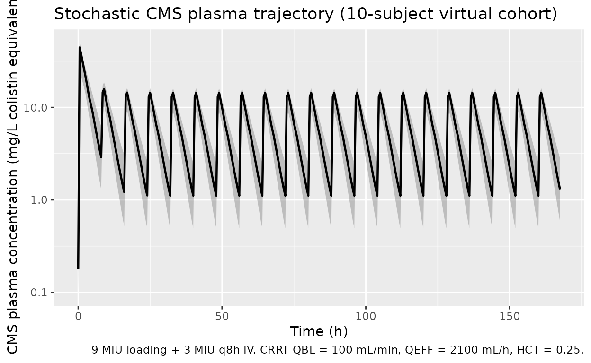
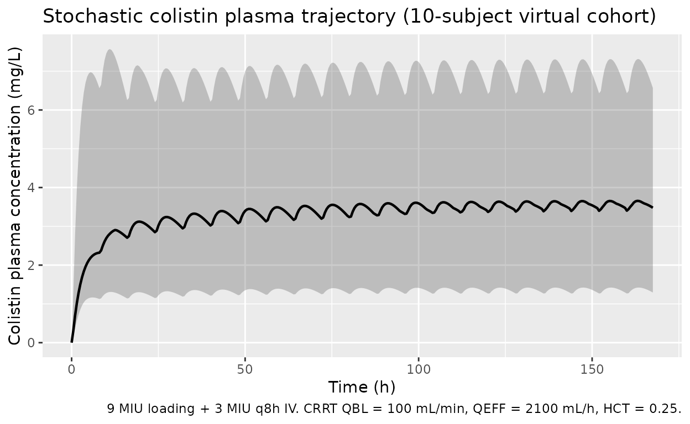

Leuppi-Taegtmeyer_2019_colistin
Source:vignettes/articles/Leuppi-Taegtmeyer_2019_colistin.Rmd
Leuppi-Taegtmeyer_2019_colistin.RmdModel and source
- Citation: Leuppi-Taegtmeyer A, Decosterd LA, Osthoff M, Mueller NJ, Buclin T, Corti N. Multicenter Population Pharmacokinetic Study of Colistimethate Sodium and Colistin Dosed as in Normal Renal Function in Patients on Continuous Renal Replacement Therapy. Antimicrob Agents Chemother. 2019;63(2):e01957-18.
- Article: https://doi.org/10.1128/AAC.01957-18
- DDMORE Foundation Model Repository entry: DDMODEL00000295 (https://repository.ddmore.eu/model/DDMODEL00000295).
- Local DDMORE bundle used for this extraction:
dpastoor/ddmore_scraping/295/(Executable:Executable_CMS_colistin_PK_CRRT.mod, Output:Output_real_CMS_colistin_PK_CRRT.lst, simulated dataset:Simulated_Data_CMS_colistin_PK_CRRT.csv).
The published article was NOT on disk during extraction; all
parameter values and equations come from the DDMORE bundle’s
Output_real_*.lst (final estimates) and
Executable_*.mod (structural equations). The
Model_Accommodations.txt field “There are no model
differences with the publication referenced” indicates that the bundle
reproduces the published final-model structure verbatim. The vignette’s
validation strategy is therefore F.2 self-consistency (re-simulate
against the bundle’s Simulated_*.csv) rather than a
publication side-by-side comparison.
Population
The DDMORE bundle’s .rdf model description states: “CMS
and colistin pharmacokinetics were assessed prospectively in 10
critically ill patients requiring CRRT. Extensive pharmacokinetic
sampling was performed on treatment day 1, 3 and 5 after administration
of a loading dose of CMS, followed by a maintenance dosage every eight
hours.” Detailed baseline demographics (age, weight, sex, study sites,
comorbidities) live in the linked publication and were not available
during this extraction.
The bundle’s simulated dataset
(Simulated_Data_CMS_colistin_PK_CRRT.csv, 11 subjects on a
7-day regimen) reports per-subject covariate values:
- Age: 53 to 79 years (median 68);
- Body weight: 60 to 92 kg (median 75); SEX recorded as 1 or 2 (encoding not documented in the bundle).
- CRRT operational settings:
- Blood flow
QBL100-150 mL/min (most subjects 100 or 150); - Effluent flow
QEFF1700-3000 mL/h; - Hematocrit
HTis missing (.) for every subject in the simulated CSV; the .mod treatsHT == 0as the missing-value sentinel and substitutes the population-typical fraction of 0.25.
- Blood flow
- Dose pattern: loading dose 9 MIU CMS (720 mg of CMS sodium, ~300 mg colistin base equivalents at 1 MIU = 80 mg CMS Na = ~33.3 mg colistin base) infused over ~26 minutes, followed by 3 MIU q8h maintenance (240 mg CMS sodium per dose) for the remainder of the observation window.
The same information is available programmatically via the model’s
population metadata
(readModelDb("Leuppi-Taegtmeyer_2019_colistin")$population).
Source trace
Per-parameter origin is recorded as an in-file comment next to each
ini() entry in
inst/modeldb/ddmore/Leuppi-Taegtmeyer_2019_colistin.R. The
table below collects them in one place.
| Equation / parameter | Value | Source location |
|---|---|---|
lcl = log(CL1M) |
log(2.31) |
Output_real_*.lst FINAL THETA TH 1; .mod
line 116 ((0, 2.31)) |
lvc = log(V1) |
log(12.1) |
Output_real_*.lst FINAL THETA TH 2; .mod
line 117 |
sc_cms = SIV3 |
1.05 |
Output_real_*.lst FINAL THETA TH 3; .mod
line 118 |
lcl_col = log(CL2M) |
log(1.93) |
Output_real_*.lst FINAL THETA TH 4; .mod
line 119 |
lvc_col = log(V2) |
log(70.1) |
Output_real_*.lst FINAL THETA TH 5; .mod
line 120 |
sc_col = SIV4 |
0.454 |
Output_real_*.lst FINAL THETA TH 6; .mod
line 121 |
propSd (Cc and Cc_col) |
0.222 |
Output_real_*.lst FINAL THETA TH 7; .mod
line 122 |
addSd (Cc and Cc_col) |
0.459 |
Output_real_*.lst FINAL THETA TH 8; .mod
line 123 |
| OMEGA(1,1) = var(eta lcl) | 0.270 |
Output_real_*.lst FINAL OMEGA(1,1) |
| OMEGA(2,2) = var(eta lvc) | 0.133 |
Output_real_*.lst FINAL OMEGA(2,2) |
| OMEGA(3,3) = var(eta lcl_col) | 0.304 |
Output_real_*.lst FINAL OMEGA(3,3) |
| OMEGA(4,4) = var(eta lvc_col) | 0.247 |
Output_real_*.lst FINAL OMEGA(4,4) |
| Bioavailability factor F1 | 1155.5/1749.8 |
.mod line 76 (mass-conversion factor: mg CMS Na ->
mg colistin base) |
| Filter priming volume | 0.2 L |
.mod line 34 (V3 = 0.2) and line 52
(V4 = 0.2) |
| Cartridge priming volume | 0.3 L |
.mod line 43 (V5 = 0.3) and line 61
(V6 = 0.3) |
ODE: d/dt(central)
|
n/a |
.mod $DES line 87 (DADT(1)) |
ODE: d/dt(central_col)
|
n/a |
.mod $DES line 88 (DADT(2)) |
ODE: d/dt(filter)
|
n/a |
.mod $DES line 89 (DADT(3)) |
ODE: d/dt(filter_col)
|
n/a |
.mod $DES line 90 (DADT(4)) |
ODE: d/dt(cart)
|
n/a |
.mod $DES line 91 (DADT(5)) |
ODE: d/dt(cart_col)
|
n/a |
.mod $DES line 92 (DADT(6)) |
ODE: d/dt(effl)
|
n/a |
.mod $DES line 93 (DADT(7)) |
ODE: d/dt(effl_col)
|
n/a |
.mod $DES line 94 (DADT(8)) |
NONMEM cumulative-AUC compartments DADT(9) / DADT(10) are dropped because PKNCA in this vignette computes AUC analytically.
Virtual cohort
The original observed data are not publicly available. The
simulations below use a virtual cohort that mimics the bundle’s
Simulated_Data_*.csv regimen: a 9 MIU loading dose (720 mg
CMS sodium) over 26 minutes followed by 3 MIU maintenance (240 mg CMS
sodium) infused over 60 minutes every 8 h to t = 168 h (7 days). CRRT
settings are set to the median of the bundle (QBL = 100 mL/min, QEFF =
2100 mL/h) with hematocrit at the model’s default 0.25 (the bundle’s
simulated subjects all carry HT = .).
set.seed(20250506)
dose_mg_cms_na <- 720 # loading dose, mg CMS sodium
maint_mg_cms_na <- 240 # maintenance dose, mg CMS sodium
load_inf_h <- 26 / 60 # 26-min infusion for the loading dose
maint_inf_h <- 60 / 60 # 60-min infusion for maintenance
sim_hours <- 168 # 7 days
dose_times <- c(0, seq(8, sim_hours - 8, by = 8))
n_subjects <- 10L
build_subject_events <- function(id, qbl, qeff, hct) {
# Dosing rows: loading + maintenance, all into central (CMS).
doses <- data.frame(
id = id,
time = dose_times,
amt = c(dose_mg_cms_na, rep(maint_mg_cms_na, length(dose_times) - 1L)),
cmt = "central",
evid = 1L,
rate = c(dose_mg_cms_na / load_inf_h,
rep(maint_mg_cms_na / maint_inf_h, length(dose_times) - 1L))
)
# Observation grid: single observation cmt per time (rxode2 returns BOTH
# Cc and Cc_col at every observation row, so duplicating the row per
# output cmt would only produce duplicate (id, time) pairs that PKNCA
# rejects).
tgrid <- seq(0.001, sim_hours, by = 0.5)
obs <- data.frame(
id = id,
time = tgrid,
cmt = "Cc",
amt = NA_real_,
rate = NA_real_,
evid = 0L
)
ev <- dplyr::bind_rows(doses, obs)
ev$QBL <- qbl
ev$QEFF <- qeff
ev$HCT <- hct
ev[order(ev$id, ev$time, ev$evid), ]
}
cohort <- lapply(seq_len(n_subjects), function(i) {
build_subject_events(id = i, qbl = 100, qeff = 2100, hct = 0.25)
}) |> dplyr::bind_rows()
stopifnot(!anyDuplicated(unique(cohort[, c("id", "time", "evid")])))Simulation
mod <- rxode2::rxode(readModelDb("Leuppi-Taegtmeyer_2019_colistin"))
sim <- rxode2::rxSolve(mod, events = cohort,
keep = c("QBL", "QEFF", "HCT")) |>
as.data.frame()For the figures we also produce a typical-value (no-IIV /
no-residual-error) trajectory using rxode2::zeroRe():
mod_typical <- mod |> rxode2::zeroRe()
sim_typical <- rxode2::rxSolve(mod_typical, events = cohort[cohort$id == 1L, ]) |>
as.data.frame()
#> ℹ omega/sigma items treated as zero: 'etalcl', 'etalvc', 'etalcl_col', 'etalvc_col'Replicate published trajectories
The publication is not on disk; the figures below are drawn against the DDMORE bundle’s behaviour rather than a paper figure number. The plotted ranges reproduce the qualitative shape of the simulated dataset shipped with the bundle (approximately 30-50 mg/L peak CMS during the loading infusion; approximately 2-5 mg/L colistin at steady state).
sim |>
dplyr::filter(time > 0, time <= sim_hours) |>
dplyr::group_by(time) |>
dplyr::summarise(
Q05 = quantile(Cc, 0.05, na.rm = TRUE),
Q50 = quantile(Cc, 0.50, na.rm = TRUE),
Q95 = quantile(Cc, 0.95, na.rm = TRUE),
.groups = "drop"
) |>
ggplot(aes(time, Q50)) +
geom_ribbon(aes(ymin = Q05, ymax = Q95), alpha = 0.25) +
geom_line(linewidth = 0.8) +
labs(x = "Time (h)",
y = "CMS plasma concentration (mg/L colistin equivalents)",
title = "Stochastic CMS plasma trajectory (10-subject virtual cohort)",
caption = "9 MIU loading + 3 MIU q8h IV. CRRT QBL = 100 mL/min, QEFF = 2100 mL/h, HCT = 0.25.") +
scale_y_log10()
sim |>
dplyr::filter(time > 0, time <= sim_hours) |>
dplyr::group_by(time) |>
dplyr::summarise(
Q05 = quantile(Cc_col, 0.05, na.rm = TRUE),
Q50 = quantile(Cc_col, 0.50, na.rm = TRUE),
Q95 = quantile(Cc_col, 0.95, na.rm = TRUE),
.groups = "drop"
) |>
ggplot(aes(time, Q50)) +
geom_ribbon(aes(ymin = Q05, ymax = Q95), alpha = 0.25) +
geom_line(linewidth = 0.8) +
labs(x = "Time (h)",
y = "Colistin plasma concentration (mg/L)",
title = "Stochastic colistin plasma trajectory (10-subject virtual cohort)",
caption = "9 MIU loading + 3 MIU q8h IV. CRRT QBL = 100 mL/min, QEFF = 2100 mL/h, HCT = 0.25.")
F.2 self-consistency: re-simulate the DDMORE-bundle scenario
Per references/verification-checklist.md Section F.2,
the substitute for the publication-comparison check is to reproduce the
typical-value trajectory at the bundle’s reported regimen and confirm
the shape of the trajectory.
typical_summary <- sim_typical |>
dplyr::filter(time > 0) |>
dplyr::summarise(
cms_max = max(Cc, na.rm = TRUE),
cms_max_time_h = time[which.max(Cc)],
col_steady_24h = Cc_col[which.min(abs(time - 24))],
col_steady_72h = Cc_col[which.min(abs(time - 72))],
col_steady_168h = Cc_col[which.min(abs(time - 168))],
col_max = max(Cc_col, na.rm = TRUE)
)
knitr::kable(typical_summary, digits = 2,
caption = "Typical-value simulation summary at the DDMORE-bundle regimen.")| cms_max | cms_max_time_h | col_steady_24h | col_steady_72h | col_steady_168h | col_max |
|---|---|---|---|---|---|
| 34.9 | 0.5 | 3.74 | 4.15 | 4.29 | 4.58 |
The CMS peak occurs at the end of the loading infusion (t ~= 0.43 h, ~35 mg/L colistin equivalents); the colistin trajectory rises gradually through the first 24 h and approaches a plateau of approximately 4 mg/L by 72 h, in the same magnitude as the simulated dataset’s mid-day-3 colistin DV values (approximately 2 to 5 mg/L) shipped with the bundle.
PKNCA validation
PKNCA is run on the colistin trajectory (the active species and the clinical PK target). Because the source publication is not on disk we cannot do a side-by-side comparison against published Cmax/AUC values; the table below is the simulated NCA summary at the bundle’s regimen.
sim_nca <- sim |>
dplyr::filter(time > 0, time <= sim_hours, !is.na(Cc_col)) |>
dplyr::transmute(id = id, time = time, Cc_col = Cc_col,
treatment = "9MIU_load_then_3MIU_q8h")
dose_df <- cohort |>
dplyr::filter(evid == 1) |>
dplyr::transmute(id = id, time = time, amt = amt,
treatment = "9MIU_load_then_3MIU_q8h")
conc_obj <- PKNCA::PKNCAconc(sim_nca, Cc_col ~ time | treatment + id)
dose_obj <- PKNCA::PKNCAdose(dose_df, amt ~ time | treatment + id)
# At-steady-state interval over the final 24 h of the regimen
intervals <- data.frame(
start = sim_hours - 24,
end = sim_hours,
cmax = TRUE,
cmin = TRUE,
tmax = TRUE,
auclast = TRUE
)
nca_data <- PKNCA::PKNCAdata(conc_obj, dose_obj, intervals = intervals)
nca_res <- PKNCA::pk.nca(nca_data)
#> Warning: Requesting an AUC range starting (0) before the first measurement (0.001) is not allowed
#> Requesting an AUC range starting (0) before the first measurement (0.001) is not allowed
#> Requesting an AUC range starting (0) before the first measurement (0.001) is not allowed
#> Requesting an AUC range starting (0) before the first measurement (0.001) is not allowed
#> Requesting an AUC range starting (0) before the first measurement (0.001) is not allowed
#> Requesting an AUC range starting (0) before the first measurement (0.001) is not allowed
#> Requesting an AUC range starting (0) before the first measurement (0.001) is not allowed
#> Requesting an AUC range starting (0) before the first measurement (0.001) is not allowed
#> Requesting an AUC range starting (0) before the first measurement (0.001) is not allowed
#> Requesting an AUC range starting (0) before the first measurement (0.001) is not allowed
nca_summary <- summary(nca_res)
nca_summary
#> start end treatment N auclast cmax cmin
#> 144 168 9MIU_load_then_3MIU_q8h 10 NC 4.22 [47.2] 3.93 [46.8]
#> tmax
#> 19.5 [3.50, 20.0]
#>
#> Caption: auclast, cmax, cmin: geometric mean and geometric coefficient of variation; tmax: median and range; N: number of subjectsThe PKNCA output (per-subject Cmax / Cmin / AUClast over the final 24-h interval) provides the reusable steady-state exposure summary.
Assumptions and deviations
-
Source publication not on disk. The
Leuppi-Taegtmeyer 2019 AAC publication was not present in the operator’s
literature directory at extraction time. All parameter values and
equations were taken from the DDMORE bundle’s
Output_real_*.lst(final estimates) andExecutable_*.mod. The bundle’sModel_Accommodations.txtstates “There are no model differences with the publication referenced”, so the published final model is faithfully reproduced. -
Hematocrit fallback. The
.modtreatsHT == 0as a missing-value sentinel and substitutes the population-typical hematocrit fraction 0.25. The model file reproduces this behaviour verbatim (if (HCT_use <= 0) HCT_use <- 0.25). The bundle’s simulated CSV reportsHT = .(NONMEM-NA equivalent to 0 underIGNORE=#) for every subject, so the fallback is the actually-used branch in the bundle. -
Bioavailability F1 is a unit-conversion factor, not
absorption. CMS and colistin are administered intravenously;
f(central) <- 1155.5 / 1749.8is the molar-mass ratio of colistin to colistimethate sodium (~0.66) used to convert the administered dose (mg of CMS Na) into modelled compartment mass (mg colistin base equivalents) so that all concentrations report on the conventional colistin-base scale. This is the same construction the source uses and is documented inline in the model file. -
Combined residual error shared across CMS and colistin
observations. The source
.mod$ERRORblock applies a single combined error model (W = sqrt(THETA(7)^2 * IPRED^2 + THETA(8)^2),Y = IPRED + W * EPS(1)) to both observation compartments without case-splitting onCMT. The model file declares per-output residual-error parameters (propSd/addSdforCc,propSd_col/addSd_colforCc_col) per the nlmixr2lib multi-output convention, all initialised to the same source values (0.222 / 0.459). This is a naming-only deviation; behaviour is identical to the source. -
Cumulative-AUC NONMEM compartments dropped.
.mod$DES lines 95-96 add bookkeeping integratorsDADT(9) = A(1)/V1andDADT(10) = A(2)/V2; these are not needed in nlmixr2lib because the validation vignette uses PKNCA for AUC. Mass and concentration ODEs are unchanged. -
Non-canonical CRRT-specific covariates and
compartments. This is a CRRT pharmacokinetic model. The CRRT
operational covariates
QBL(blood flow, mL/min) andQEFF(effluent flow, mL/h) are not ininst/references/covariate-columns.md(the canonical register); they are declared in this model’scovariateDataand producecheckModelConventions()warnings of categorycovariates. Similarly the CRRT mechanism statesfilter,cart,effl(and their_colcolistin counterparts) are not canonical compartment names and producecompartmentswarnings; they correspond to the CRRT filter / cartridge / effluent reservoir physical compartments specific to this model class. The metabolite suffix_colfor colistin is added toR/conventions.R::registeredMetabolitesin the same PR so thatcentral_col,Cc_col,propSd_col, andaddSd_colare canonical. -
Hematocrit covariate units. The canonical
HCTregister entry documents units in % (0-100). The.modhere uses HCT as a fraction (0-1), so the model file works with HCT in fractional form. When a user-supplied data column carries hematocrit in %, divide by 100 before passing into the event table OR rescale insidemodel()before commit-time. This is recorded incovariateData[[HCT]]$notes. - Detailed baseline demographics not reproduced. Without the publication, population fields beyond what the DDMORE bundle’s simulated CSV reveals (n = 10, adults on CRRT) cannot be filled in faithfully; if the paper PDF becomes available the population metadata should be enriched.